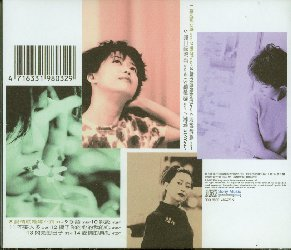

＝＝＝ mark10alsの趣味の部屋 ＝＝＝
MENU1
アジアの歌姫
孟庭葦
黎姿
Ｒｉｎｇ
前のＣＤ
タイトル一覧
次のＣＤ
孟庭葦的 音楽盒
１９９８年３月
孟庭葦的 音楽盒
ＳＤＤ９８０３
新力音楽（Sony Music）
雨過心晴 4'43"
嫉妬 4'46"
眞的還是假的 4'34"
将錯就錯 3'37"
第二道彩虹 3'58"
心電感應 4'47"
愛情ＳＴＡＹ 4'46"
愛情就是聴不到 5'16"
手話 3'50"
黙認 4'28"
不要太多 4'25"
傷了（イ尓）的心的我傷心 3'35"
閃亮的日子 3'24"
愛情的眞相 4'20"

このアルバムの中では、「雨過心晴」「嫉妬」「愛情就是聴不到」の３曲が、新曲です。
これには、ＶＣＤがおまけで１枚ついています。
ＶＣＤの収録曲は、「黙認」「将錯就錯」「不要太多」「第二道彩虹」の４曲です。
このＣＤをＣＤデッキにかけると１８曲も入っていると表示されましたので（？）
となってしまいました。実は、曲のほかにナレーションが入っていました。